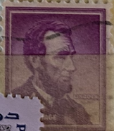
| SOURCE | TITLE| IMAGE MATCH | click to source page |
| eBay | abraham lincoln 4 cent stamp purple very rare | eBay | 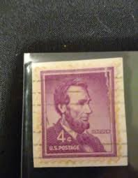 |
| eBay | Rare 4 cent Abraham Lincoln Stamp Purple On Envelope Postmarked 1965 | eBay | 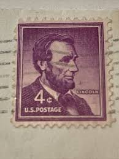 |
| eBay | 4 Cent Purple Used Used US Stamps (1901-Now) for sale | eBay | 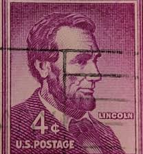 |
| Mystic Stamp Company | 1058a - 1958 4c Liberty Series: Abraham Lincoln, Imperf. Error - Mystic Stamp Company | 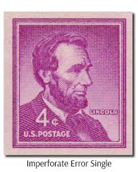 |
| eBay | Abraham Lincoln 4 Cent Stamp In Unused Us Stamps (1941-Now) for sale | eBay | 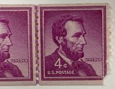 |
| eBay | 4 Cent Illinois Used US Stamps (1901-Now) for sale | eBay | 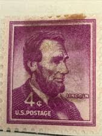 |
| eBay | 4 Cent Purple Historical Figures United States Stamps for sale | eBay | 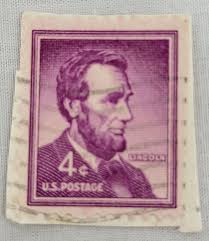 |
| eBay | XF/S (Extremely Fine/Superb) PSE Unused US Stamps (1941-Now) for sale | eBay | 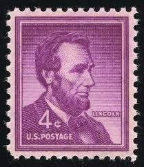 |
| eBay | 4 Cent Purple Used United States Stamps for sale | eBay | 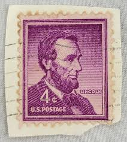 |
| eBay | 4 Cent Postal History Covers for sale | eBay | 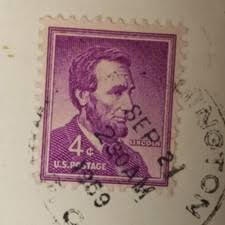 |
| eBay | Pennsylvania Used US Stamps (1901-Now) for sale | eBay | 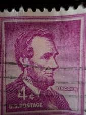 |
| eBay Australia | Abraham Lincoln .04 Black Stamp Vintage Uncirculated Rare with bonus stamp. (Wh) | eBay Australia | 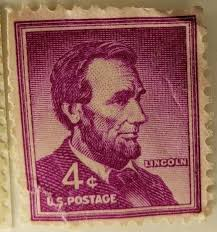 |
| eBay | 4 Cent Purple Used Used US Stamps (1901-Now) for sale | eBay | 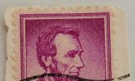 |
| eBay | Purple Politicians Used US Stamps (1901-Now) for sale | eBay | 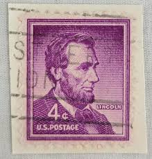 |
| eBay | Mint Never Hinged/MNH Green Stamps for sale - eBay | 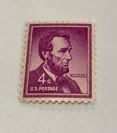 |
| eBay | 4 Cent Florida Used US Stamps (1901-Now) for sale | eBay | 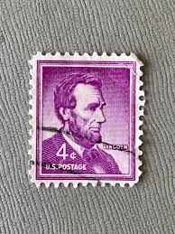 |
| HipStamp | 1036 4 cent 1954 Abraham Lincoln, used F-VF | United States, General Issue Stamp / HipStamp | 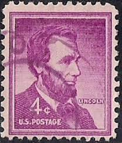 |
| Make an offer. Pick up only! USAle FRANK LLOYD WRIGHT ዝ 2c U.S.POSTAGE UINCOLS Dix サ込 Porothe Dorothea USAle 4c VEPOSTAGE рез HUVS viNEm | 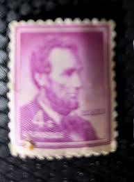 | |
| vegas-stamps-hobbies.com | 1954-68 Abraham Lincoln Single 4c Postage Stamp - Scott 1036 - MNH, OG – Vegas Stamps & Hobbies | 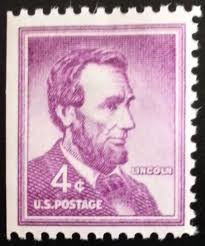 |
| HipStamp | US Stamps 4c Lincoln Error Line Pair Striking | United States, Stamp / HipStamp | 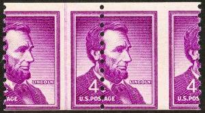 |
| Abraham Lincoln 4 cent stamp purple very rare, Gem! | eBay | 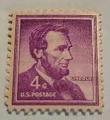 | |
| Norfolk Family History Society | Untitled | 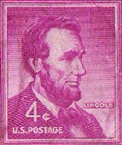 |
| YouTube | Lincoln Antique stamp prices - YouTube | 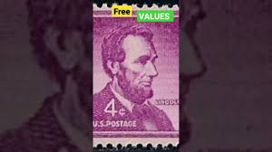 |
| eBay | 4 Cent Mint Never Hinged/MNH Red United States Stamps for sale | eBay | 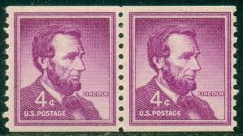 |
| eBay | Magenta Used US Stamps (1901-Now) for sale | eBay | 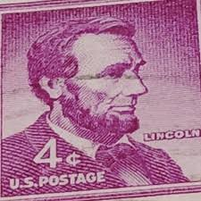 |
| PicClick UK | US VINTAGE ABRAHAM Lincoln Purple 4 Cent Stamp 1962 £1.99 - PicClick UK | 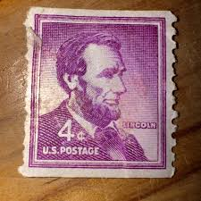 |
| Bed Bath & Beyond | Postage Stamp featuring Abraham Lincoln - Multi - Bed Bath & Beyond - 16469163 | 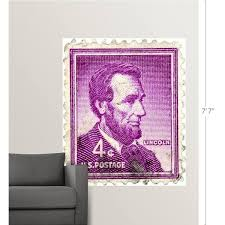 |
| Value request : r/stamps | 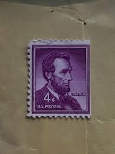 | |
| Lowest postage rate you can remember? | 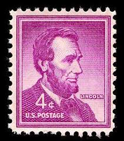 | |
| Etsy | Pack of 20 .. 4c Abraham Lincoln Stamp of 1954.. Vintage Unused US Postage Stamps. Civil War President | Honest Abe | Liberty Stamps - Etsy | 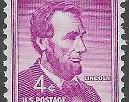 |
| schrijnwerkerij.com | Rare postage stamps and Johnny cash news | 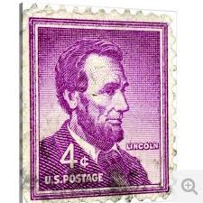 |
| Alamy | Abraham lincoln 1930 hi-res stock photography and images - Alamy | 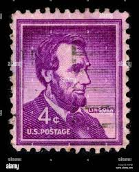 |
| placementug.com | estapas de lincon 1054= 1959 | 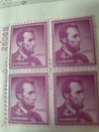 |
| Dreamstime.com | 140 Abraham Lincoln Stamp Stock Photos - Free & Royalty-Free Stock Photos from Dreamstime | 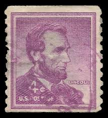 |
| Shutterstock | 9+ Hundred Lincoln Stamp Royalty-Free Images, Stock Photos & Pictures | Shutterstock | 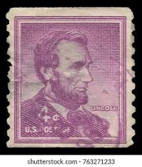 |
| Lincoln 4 cent : r/stampcollecting | 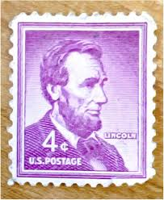 | |
| agpjamaica.com | Moreno Clowns | 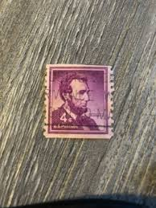 |
| YouTube | USA Stamps Value - YouTube | 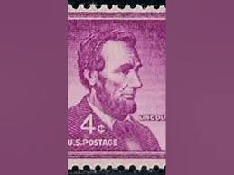 |
| Any idea on value? : r/stamps | 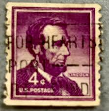 | |
| iStock | Usa Stamp The 16th President Of The United States Abraham Lincoln Stock Photo - Download Image Now - iStock | 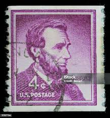 |
| ligamentsolution.com | 4 cent Lincoln stamp | 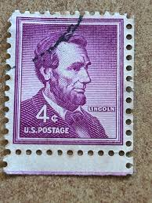 |
| eBay | 4 Cent Violet Used US Stamps (1901-Now) for sale | eBay | 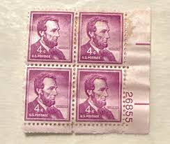 |
| 66 Stamps-US b/4 1980 ideas to save today | stamp collecting, postage stamps, stamp and more | 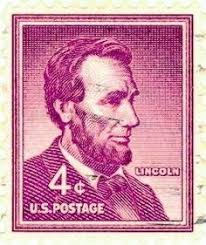 | |
| Shutterstock | United States Circa 1950 4 Cents Stock Photo 75563602 | Shutterstock | 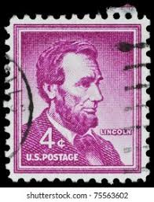 |
| Abrahem lincoln 4 cent : r/stampcollecting | 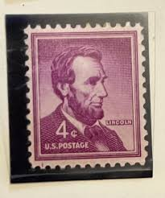 | |
| PicClick UK | 4 X ABRAHAM lincoln 4 cent U.S. postage stamp purple unhinged 1951-1960 £63.09 - PicClick UK | 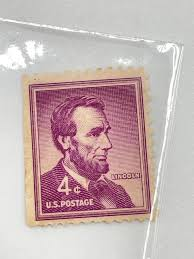 |
| eBay UK | Mint Hinged Used US Stamps (1901-Now) for sale | eBay UK | 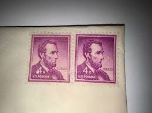 |
| Shutterstock | 21 Historic Pink Violet Stamp Royalty-Free Images, Stock Photos & Pictures | Shutterstock | 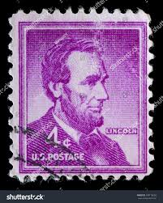 |
| eBay | RARE US Abraham Lincoln 4 Cent Stamp 1961 Good condition | eBay | 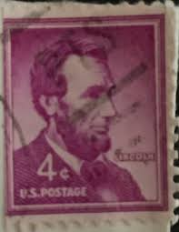 |
| Amy Cresap (amycresap) - Profile | Pinterest | ||
| eBay | Abraham Lincoln 4 cent stamp purple very rare, Gem! | eBay | |
| Alamy | Postage stamp from United States of America (USA) in the Liberty Issue Stock Photo - Alamy | |
| eBay | Abraham Lincoln 4 cent stamp purple very Rare, Double Line. | eBay | |
| eBay | U.S. Postage ~ Abraham Lincoln ~ Cancelled/Post ~ Purple 4¢ Stamp -c.1956 ~ S08 | eBay | |
| Showgard | Featured Stamp & Coin Collecting Supplies | |
| eBay | RARE!! Lincoln 4 Cent Purple Stamp / 1964 Mercury Comet Postcard Combination! | eBay | |
| eBay | U.S. Postage ~ Abraham Lincoln ~ Cancelled/Post ~ Purple 4¢ Stamp -c.1956 ~ S12 | eBay | |
| eBay | RARE US Abraham Lincoln 4 Cent Stamp | eBay | |
| eBay | Abraham Lincoln 4 cent Stamp purple Very Rare, Gem! | eBay | |
| eBay | Lincoln 4-cent vintage stamp, on unposted envelope | eBay |